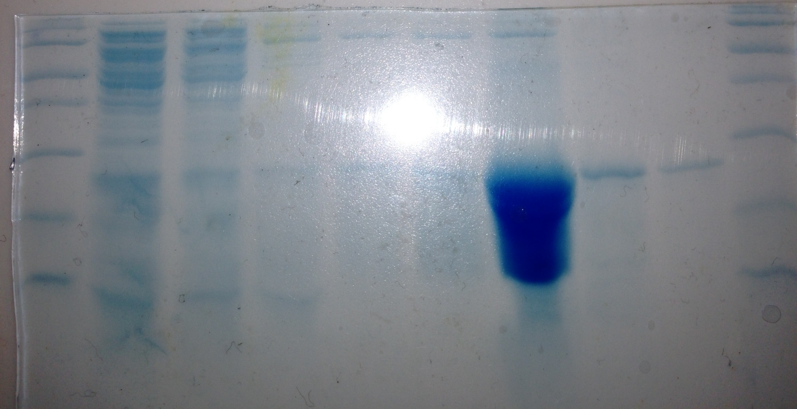
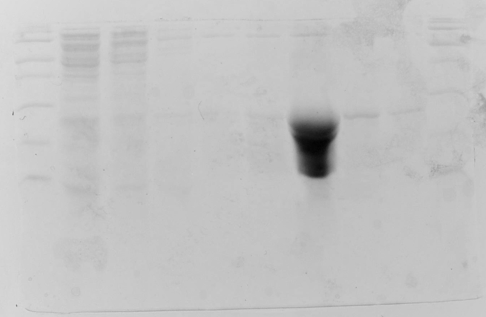

Using a fresh solution of 15% Acrylamide SDS solution, a new gel was poured for the analysis of the cobalt column fractions. The gel was polymerized with 50uL each of 10% APS and TEMED. There were no problems with it today, however I noted that the 3% stacking gel had not fully polymerized, I added APS and TEMED to the remaining solution so that it could polymerize before disposal. 10uL samples were taken from the column fractions and mixed with 10uL of 2X Loading Buffer with DTT, then boiled for 4 minutes. After some cooling, the tubes were spun briefly in a microfuge to bring condensate to the bottom. The gel was loaded in the following sequence: L1, FT, W1, W2, W4, E1, E2, E3, E5, L2. Pictures of the gel are shown below.
 Elution 2 was measured spectrographically to determine the quantity of purified protein in its fraction, as it is greatly enriched in the product TLC.
After blanking the spectrophotometer at 280 nm on 950uL of elution buffer, 50uL of E2 was added, mixed, and an absorbance reading was taken: 0.317 x 20 = 6.34
ExPASy predicts the extinction coefficient \(\epsilon\) to be 14,440 and gives the molar mass to be 19667. Calculations using the Beer-Lambert Law \(A=\epsilon \times l \times c\) show that the concentration of TLC is approximately 440uM and given the volume of 1mL, 8.663mg of TLC was obtained in E2. This was derived from a culture volume of 500mL. I would expect that a 1L culture volume could yield enough protein for NMR studies.
{kind=link}
{kind=link}